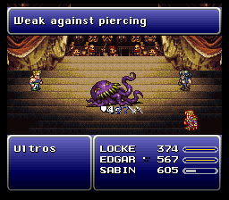
Thank you for patching OT6. Please read this booklet before you start your adventure, and keep it nearby. Your party will thank you.
OT6 is a fan-made modification. It is not made, sold or endorsed by the companies that made Final Fantasy III or Octopath Traveler. The story, world and characters belong to the original game; the new battle rules are OT6's. OT6's code is MIT licensed, and its patch is GPL v3.
SAVE OFTEN ★ BREAK SHIELDS
OT6 comes as a patch for the Super NES game Final Fantasy III (USA), version 1.0. You need your own copy of that game as a ROM file, the one whose SHA-1 is
4f37e4274ac3b2ea1bedb08aa149d8fc5bb676e7
Unzip the release, ot6-vX.Y.zip. Put Final Fantasy III (USA).bps beside your ROM and open the ROM in your emulator. Mesen, bsnes, Snes9x and other emulators that understand BPS patches apply it as the game loads, without changing your ROM. Otherwise, apply the patch with a BPS patcher such as Flips or beat.
Install ot6-vX.Y.apk, the OT6 Patcher, and choose the folder that holds your ROM. It finds the ROM, applies the patch and writes OT6.sfc beside it. After an update it does this again.
The release zip has a saves folder: saves at points through the story, from Narshe to the World of Ruin, in story order. Each is in slot 3. To use one:
A save from before v0.44 loads with no Esper progress. Everything else in it carries over.
In battle, hold L and R together to run from some fights.
Move with the + Control Pad. Choose with the A Button: talk to people, open chests and check things. Cancel a choice with the B Button. Open the Main Menu with the X Button; Skills, Equip, Relic and Config are there, and so is Save, when you stand on a save point or on the world map.
When a character's meter is full, their command window opens. Choose with A, back out with B. The next page has the rest, including the two buttons OT6 gives new jobs.
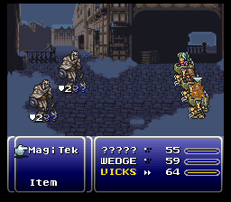
This is the button you will press most in OT6. While you choose a command, press R to put a Boost Point on it: up to three, and never more than the character has. Arrows after the name show how many are pending, and the character glows. Press L to take one back.
The points are spent when the action happens. If the action you pick cannot use a boost, the R Button does nothing, or the pending points are dropped before they cost anything.
In the Magic list, the R Button also shows you what the boost buys: the spell's name and price change as you press it. Fire becomes Fire 2, then Fire 3.
| Button | In battle |
|---|---|
| A | Choose a command, a spell, an item or a target. |
| B | Back out of a list or a target choice. |
| X or Y | Pass the turn to the next character who is ready. |
| R | Add a Boost Point to the command you are choosing. |
| L | Take a pending Boost Point back. |
| L and R, held | Run away. Some battles can't be escaped. |
| Left / Right | On the command window: Row or Def. (Defense halves damage until your next command.) |
| Up, in Magic | The equipped Esper. Summon it with A, once a battle. |
Pick Wait as the Battle Mode under Config, and time stops while you are choosing spells and items. There is a lot to read in an OT6 battle; Wait gives you time to read it.
A thousand years ago, the War of the Magi scorched the world. When it ended, magic was gone, and people learned to live with steel, steam and gunpowder instead.
Now magic is stirring again. The Gestahlian Empire has found a way to bring back a little of the old power and to build it into its machines. Its soldiers ride to war in Magitek armor, walking engines that shoot fire, ice and lightning. Town by town, the Empire is taking the continent.
In the north lies Narshe, a mining town that has kept its independence through the winter and the war. Its miners have dug something out of the ice deep in the mines: a creature frozen since the old war. People call it an Esper.
The Empire wants it. On a snowy night, three soldiers in Magitek armor march on Narshe. Two of them are veterans named Vicks and Wedge. The third is a young woman who does not seem to know where she is, or why she is there.
That is where your story begins.
The story, the world, the towns and the dungeons are the ones you remember. What is new is the way battles work: monsters carry shields and hidden weaknesses, and your heroes save up Boost Points to make one action count. The pages that follow explain it all, and the Beginner’s House in Narshe teaches the basics in the game itself.
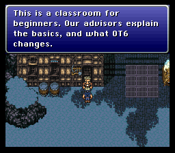
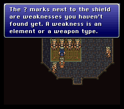
The school in Narshe has been rewritten for OT6. Its advisors explain shields and weaknesses, Boost Points, stronger spells, the skills that work differently, and how Espers are worn. A chest beside the right-hand room holds a practice fight.
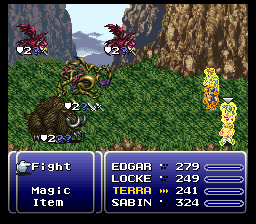
123456The next pages explain each of these. If a monster ever has no line at all, it simply has no shields, which is its own kind of honesty.
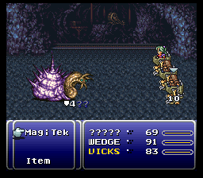
Under each enemy is one line. First comes a shield icon and a number: how many shields the enemy has left. Then there is one cell for each weakness. A grey ? is a weakness you have not found yet. Once you hit it, the cell shows the icon of the element or weapon type.
A few enemies have no shields and show no line.
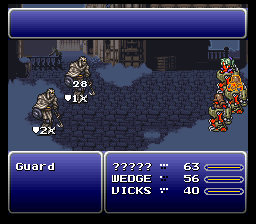
While an enemy has shields it takes half damage. Each hit that matches a weakness removes one shield. A hit that matches both an element and a weapon type removes two, and an attack that strikes several times removes a shield per hit.
A weakness you find is remembered for every enemy of that kind, in later battles and in your save. Scan reveals all of a kind's weaknesses at once.
A few attacks take shields whatever the enemy is weak to: the Break spell, Locke's Filch, Sabin's Bum Rush, and Cyan's Cleave on a boss.
A weapon's icon shows its type, and Fight uses the type of the weapon in hand.
| Type | Weapons |
|---|---|
| Slashing | swords, katanas, claws |
| Piercing | spears, daggers, thrown blades, bolts, darts, fangs |
| Bludgeoning | fists, staves, rods, flails, boomerangs |
| Special | dice, cards, brushes |
Skills have a type of their own: a Blitz keeps its type whatever Sabin wears, and Edgar's Chain Saw is slashing. A weapon with an element hits the weapon's type and its element at once.
Fire, ice, lightning, wind, earth, water, holy and poison. A spell hits the weakness of its element, and the Magic list shows each spell's element as an icon. A hit on an elemental weakness also does the usual extra damage.
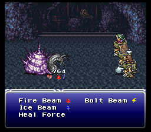
When the last shield falls, the enemy breaks. Its shield icon is drawn cracked. It cannot act for a while, and hits on it do double damage. The hit that breaks it still does half, so the payoff comes on the next hit.
When it recovers, its shields come back. So plan the break: strip the shields, then hit hard while it is down.
Bring a spread of weapon types. Each hero's weapon is a key for some lock, and a party that holds slashing, piercing and bludgeoning, plus a spell or two, rarely meets a monster it can't break.
Some characters have an ultimate, offered only at 3 BP. It can be used again whenever the bank holds three. Each hero's page says what theirs is.
Unbroken enemies take about half damage, and everyone starts with one point. A one-point boosted Fight is a good habit in random battles: the extra swing makes up for the shields.
| Kind | Examples | A point buys |
|---|---|---|
| Fight | Fight, Mug, Capture | one more hit with a weapon in hand. With the Genji Glove and two weapons, both hands swing again. No MP. |
| Spell families | Fire, Ice, Bolt, Poison, Cure, Life, Slow, Haste | the next spell of the line: one point casts Fire 2, two points Fire 3. A third adds nothing. You pay the MP of the spell cast. |
| Damage or healing | Blitz, Tools, Lores, Dances, Esper summons, Drain, Pearl, Quake, Merton, Ultima, items that heal a number | double damage for 1 point, 4× for 2, 8× for 3 |
| Chance | Steal, Slot, Rage, a Dance's start | better odds; the third point removes the gamble |
| Duration | Runic, Morph | more of the character's own turns, or more time |
| Reach | Safe, Shell, Rflect, Vanish (on your party), Bserk, Regen, Antdot, Remedy, Mute, Sleep, Muddle, Stop, Imp, Dispel; Shadow's smoke and exit | one more target per point |
| Shields | the Break spell, Filch | one more shield per point |
| Steps | Dismantle, Debilitator | one more application per point |
| Reading | Scan, Appraise | every enemy at one point or more |
| SwdTech | Cyan's techs | the tech itself (see Cyan) |
Reach spells cover as many bodies as there are points, skipping anyone the spell would not change. Each point costs the spell's MP again, even if nobody is left for it.
On these, R does nothing, or a boost raised earlier is dropped before it costs anything:
A Sketch that draws an attack with no number to raise drops the boost.
Equip an Esper under Skills, then Espers. While it is equipped, the wearer can cast its spells and summon it once a battle: in battle, open Magic and press up on the Control Pad. Take the Esper off and both go. Nobody learns the spells. An Esper no longer raises or lowers stats while worn.
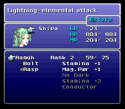
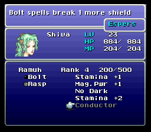
Boosting a spell lent by an Esper works as for any spell: Fire becomes Fire 2 and Fire 3. Every Esper's spells and ranks are in the table at the back of this booklet, page {{page:p-esper-table}}.
Skills come from each character's own way of learning, as in Final Fantasy III. Prices are in MP. Every character's first skill is theirs from the day they join. A ★ marks an ultimate, offered only at 3 BP.
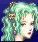
TerraMagesword · fireThe Break spell ignores weakness. At 3 BP it takes four shields for 25 MP, which makes Terra the answer to a boss nobody holds a key for.
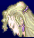
CelesRune Knightsword · ice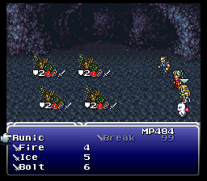
Runic drinks your own side's spells too, healing included. While it is up, heal with items, or let it lapse first. Pointed the other way, a boss that leans on spells feeds Celes MP, and a Boost Point a round, while Runic lasts.
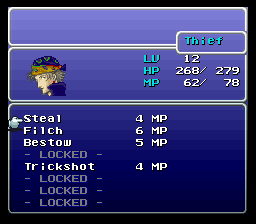
Steal by boost: with 0 points it is the Steal you know. One point makes the steal likelier and the rare item likelier. Two points make both a lot likelier. Three points always succeed and take the rare item if there is one, the common item if not. A boost never makes up an item the enemy lacks.
Only the first shield Filch takes becomes a point for Locke.
| Skill | MP | Effect | Learned |
|---|---|---|---|
| Steal | 4 | steals; a boost makes it likelier | from the start |
| Filch | 6 a shield | takes a shield, ignoring weakness, and turns it into 1 BP for Locke | from the start |
| Bestow | 5 | gives an ally the BP pending (1 to 3) | from the start |
| Mug | 4 | a Fight whose hits each steal; a boost adds hits | South Figaro escape |
| Trickshot | 4 | a thrown coin that ignores defense; a boost multiplies it | Lete River |
| Dismantle | 8 | corrodes defense, then stabs; a boost corrodes more | Sealed Gate |
| Appraise | 3 | reads one enemy's weaknesses; a boost reads all | Thamasa, after Strago joins |
| Master's Mark | 99 | robs and reads every enemy (3 BP) | Floating Continent |
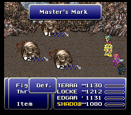
Filch is a key that fits every lock. When nobody in the party holds an enemy's weakness, Locke can still take its shields, and earn a point doing it.
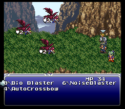
Tools are found or bought, as they always were, and cost MP each use. Each has a weapon type or an element of its own, listed below.
Debilitator gives an enemy a new weakness and shows it; a boost adds one more per point.
| Tool | MP | Where |
|---|---|---|
| AutoCrossbow | 4 | from the start. Pierces every enemy once. |
| NoiseBlaster | 6 | Figaro shop. Takes no boost. |
| Bio Blaster | 8 | Figaro shop. Poison. |
| Flash | 6 | Figaro's tool merchant and South Figaro's shop |
| Drill | 16 | Figaro Castle, after the sand dive. Two hits, piercing. |
| Chain Saw | 18 | a chest in Zozo. Slashing. |
| Debilitator | 10 | Vector's weapon shop, during the banquet |
| Overclock | to 99 | Magitek factory, after the Espers' scene |
★ Overclock: a Tool boosted with 3 BP fires twice, each time at 8×. It costs both firings, up to 99 MP.
The AutoCrossbow strikes every enemy once, so against a pack that is weak to piercing it takes a shield from each of them. And when nobody holds the key to a monster, the Debilitator makes one: give it a weakness your party can hit, then hit it.
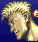
SabinMonkfists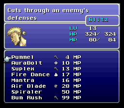
Blitzes are chosen from a list; there are no button codes to enter. Sabin learns them by level.
Fists are bludgeoning. Claws make his Fight slashing; his Blitzes keep their own type.
| Blitz | MP | Level |
|---|---|---|
| Pummel | 4 | from the start. Two hits. |
| Aura Bolt | 10 | 6. Holy. |
| Suplex | 13 | 10 |
| Fire Dance | 17 | 15. Fire. |
| Mantra | 16 | 23. Takes no boost. |
| Air Blade | 28 | 30. Wind. |
| Spiraler | 50 | 42 |
| Bum Rush | 99 | 70, or from Duncan |
★ Bum Rush is offered only at 3 BP. It is four blows, each at 8×. Each blow removes a shield whatever the enemy is weak to.
A Blitz keeps its own element and type, so Sabin carries several keys at once: holy in Aura Bolt, fire in Fire Dance, wind in Air Blade. Learn which monsters fear which, and pick the Blitz to match.
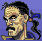
CyanSamuraikatana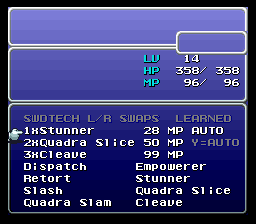
The charge gauge is gone. SwdTech opens a list of three techs, for 1, 2 and 3 BP. The three are Cyan's best learned techs, weakest first, so the list moves up as he learns more.
In the field menu, Skills, then SwdTech, lets you pick which techs sit in the three slots, or return them to automatic.
| Tech | MP | Level |
|---|---|---|
| Dispatch | 4 | from the start |
| Retort | 10 | 6. A counter stance. |
| Slash | 13 | 12 |
| Quadra Slam | 16 | 15. Four slashing hits. |
| Empowerer | 18 | 24. Drains; two hits. |
| Stunner | 28 | 34. Hits all enemies. |
| Quadra Slice | 50 | 44. Four wind hits. |
| Cleave | 99 | the Phantom Train farewell |
★ Cleave is the 3 BP slot once learned. It strikes every enemy: each one that can die, dies. A boss loses four shields and takes a very heavy cut.
Because the slots follow Boost Points, Cyan wants a full bank. Let him bank points in easy rounds, and spend all three when it matters.
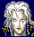
SetzerGamblercards · dice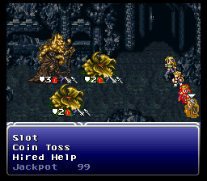
Slot opens a short list. Coin Toss and Hired Help take Gil, not MP. Each hire walks in as a different figure.
Cards and dice hit the special type. Spirits, cursed and magical bodies and some bosses can be weak to it, so Setzer is worth bringing where they gather.
| Skill | Cost | Effect |
|---|---|---|
| Slot | free | the reels. Boost: 1 point removes the rigged miss; 2 points tilt the reels your way; 3 points guarantee a triple of the icon you stop first. |
| Coin Toss | level × 30 Gil | throws Gil at every enemy. A boost adds a toss per point. |
| Hired Help | level × 50 Gil | one hired blow that uses the type the target is weak to. A boost adds a hire per point. |
| Jackpot | 99 MP | throws the Fixed Dice twice at one enemy (3 BP). Each roll lands a triple, and a low roll does little. Learned when Setzer rejoins in the World of Ruin, at Kohlingen. |
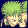
GauBeast Tamerfangs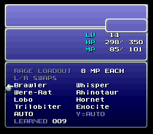
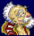
StragoScholarrod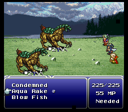
Her Sketch command opens a list, Sketch first; a boost on Sketch applies to what it draws. Brushes hit the special type. Portrait (12 MP): an ally's next boosted action gets a free point. Tint (10, level 18): the ally's weapon carries the element you pick for four turns. Varnish (14, level 24): the next enemy hit on the ally misses. Still Life (24, Owzer's mansion): a break lasts twice as long. Underpainting (28, level 36): the next weakness hit takes two shields. Gesture (30, level 42): the ally acts now. ★ Masterpiece (99, Strago's return): every other ally gets a free point. A boost reaches one more body per point; green shields mark her paint.
Save before you Sketch. A missed Sketch can still corrupt your inventory or a save, as it always could.
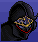
ShadowAssassinthrown blades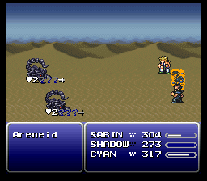
Shadow's skill is Throw. He throws the item you pick, and it is used up. A boost multiplies a damaging throw.
A boosted smoke or exit covers one more ally per point, so 3 points cover a party of four. Anyone who throws one gets this.
| Item | Where | Effect |
|---|---|---|
| Shuriken, Ninja Star | Thamasa weapon shop, World of Ruin | piercing |
| Tack Star | Colosseum | piercing |
| Fire Skean, Water Edge, Bolt Edge | Maranda weapon shop | piercing and the element, to every enemy |
| Shadow Edge | Maranda weapon shop | casts Image on the thrower |
| Inviz Edge | Maranda weapon shop | casts Vanish on the thrower |
★ Assassinate. With 3 BP, a hit of his that breaks an enemy kills it, and so does a hit on an enemy that is already broken. A boss is only broken.
Interceptor blocks and counters physical attacks half the time, as it always did.
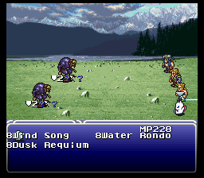
Mog learns his eight Dances by fighting on each dance's terrain. Dances cost 8 MP, 20 with 1 point, 50 with 2 and 99 with 3, and a boost multiplies every step. Off its own terrain a Dance may stumble: it fails half the time. 1 point cuts that to one in four, 2 points to one in 16, and 3 points to never. A stumble costs no MP, but the points are spent. Mog has no ultimate.
| Dance | Terrain | Dance | Terrain |
|---|---|---|---|
| Wind Song | plains, the Veldt | Earth Blues | mountains |
| Forest Suite | forests | Water Rondo | underwater |
| Desert Aria | deserts | Dusk Requium | caves |
| Love Sonata | towns, buildings | Snowman Jazz | snowfields |
Umaro takes no orders. Each turn he picks Fight, Charge, Throw (with the Rage Ring) or Storm (with the Blizzard Orb). His Fight, Charge and Throw are bludgeoning, and Storm is ice on every enemy. Umaro banks a point each turn, and when he has been hurt, he spends the bank on his next action. With 3 points he always Storms, with or without the Blizzard Orb, at 8×. He has no MP and cannot wear Espers.
Gogo joins in the Zone Eater. His Mimic is free, and a boost buys what it buys on the action he copies. Where it would buy nothing, the points are kept. Gogo cannot wear Espers. With Sketch among his commands he opens Relm's list.
For each place: what breaks the monsters you meet there, then a word on its bosses (marked ◆). “Breaks to” names the weapon types and elements that take a shield. A boss's shield count is how many hits on a weakness it takes to break it.
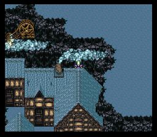
Guards and Lobos break to piercing, and Lobos also to fire. In the mines, Were-Rats and Repo Men break to slashing or piercing (fire for Were-Rats, poison for Repo Men). A Vaporite has one shield and breaks to fire, holy, piercing or bludgeoning.
Whelk. Hit the head, never the shell. The head has four shields and breaks to piercing or fire; the shell shows no shield line and answers with MegaVolt.
Marshal. Four shields; piercing or poison breaks him, and his Lobos (three shields) break to piercing or fire. The moogles' spears pierce too. Send in a healthy squad, Mog's if you can.
Kefka (the Narshe defense). Six shields; slashing, piercing, fire or poison breaks him. Arrive holding Boost Points and break him first. His Troopers and Riders break to slashing or piercing.
In the cave, Bleary, Crawly and Hornet are all weak to fire, so Terra's Fire breaks any of them; Bleary also takes piercing, Crawly slashing or bludgeoning, Hornet (one shield) slashing or piercing. On the plains, Rhinotaurs, Rhodoxes and Grease Monks take poison and piercing.
Commanders and Vector Pups take slashing or piercing (poison for Commanders, fire for Pups). In the cave, Trilobiters take piercing or bludgeoning and Primordites slashing, bludgeoning or lightning. A Gold Bear has three shields and takes slashing or bludgeoning.
TunnelArmr. Five shields; piercing (Locke's daggers, Mug), ice, lightning and water break it.
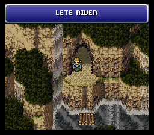
Tuskers show no weapon weakness; break them with fire or poison. Triliums take slashing, piercing or fire; Cirpiuses piercing or poison; Brawlers slashing or ice.
Vargas. Five shields; bludgeoning, holy and poison break him. Sabin's Pummel and Aura Bolt are the keys. His two Ipoohs break to slashing or fire.
On the raft, fire breaks Pterodons, Nautiloids and Exocites alike; Pterodons also take slashing or piercing, Nautiloids piercing or bludgeoning, Exocites slashing or bludgeoning. The passage toward Narshe holds 1st Class guards (piercing, bludgeoning, poison) and Wild Rats (slashing, piercing, fire).
Ultros (Lete River). Five shields; fire, lightning, slashing and piercing break him, and he absorbs water.
Soldiers break to slashing or piercing; Templars to piercing or lightning. At Doma, Leaders take slashing, and Grunts and Cadets slashing or bludgeoning.
Telstar. Four shields; bludgeoning, lightning and water (Bolt Edge) break it. Its Dobermans have two shields (piercing, fire). Break Telstar early and keep it down.
In the forest, Ghosts take slashing or special and Poplium slashing or piercing; both fear fire and holy. On the train, Hazers, Whispers and Over-Minds take slashing or special, StillGoing slashing or bludgeoning, Bombs slashing, bludgeoning, ice or water. Holy breaks all but the Bombs.
Ghost Train. Four shields; bludgeoning, fire, lightning and holy break it, and it absorbs poison, so leave Bio Blaster alone. A Suplex that lands ends the fight outright.
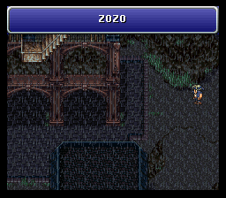
Piranhas have one shield (slashing, bludgeoning, lightning). On the Veldt, early monsters such as Stray Cats and Beakors take slashing or piercing, Rhobites slashing or bludgeoning, CrassHoppers piercing or bludgeoning.
Rizopas. Four shields; slashing, bludgeoning and lightning break it, and it absorbs water.
Anguiforms take slashing (or lightning); Actaneons and Aspiks take bludgeoning or fire. All three absorb water.
Poison (Bio Blaster) breaks every common body here. HadesGigas take bludgeoning, Gabbldegaks piercing, Harvesters and SlamDancers slashing or piercing. A lone SlamDancer casts a tier-2 spell every turn, so break it first.
Dadaluma. Six shields; piercing, bludgeoning and poison break him. His Iron Fists (two shields) join at half health: clear them with the AutoCrossbow, and break him while he crouches to jump.
In the rafters, Sewer Rats and Vermin have two shields and break to piercing or bludgeoning.
Ultros (opera stage). Six shields; fire, lightning, slashing and piercing break him, and he absorbs water.
The machines (Garm, Commando, ProtoArmor, Pipsqueak, Trapper, Chaser) mostly break to piercing or bludgeoning and to lightning or water. Flan takes bludgeoning or fire. Rhinox takes only bludgeoning; Gobbler slashing or piercing.
Ifrit and Shiva. Ifrit: six shields, weak to ice and piercing, absorbs fire. Shiva: six shields, weak to fire and slashing, absorbs ice. Change elements when they swap.
Number 024. Seven shields; slashing or piercing always breaks it. Its elemental wall keeps changing, so rely on weapons rather than spells.
Number 128. Seven shields; piercing, lightning and water break it, and it absorbs ice. Its two blades have three shields each (slashing, lightning) and grow back.
Left and Right Cranes. Six shields each; both break to piercing and water. The Right Crane also takes lightning and absorbs fire; the Left absorbs lightning. A wrong element heals the one you hit.
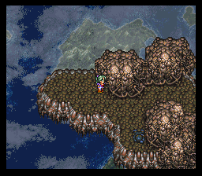
On the mountain, Mandrakes and Slurms take fire, Insecares fire or wind; Adamanchyts have five shields (piercing, bludgeoning). Near Thamasa, Cephalers take lightning, Chimeras and Baskervors poison.
Ultros (Esper Mountain). Seven shields; fire, lightning, slashing and piercing break him. The fight ends by script, so a break does not change the outcome; do not burn Boost Points on it.
FlameEater. Seven shields; ice, water and piercing break it, and it absorbs fire, so keep Fire off it. Its Balloons have one shield and explode: clear them with a spell that hits all.
Holy breaks every body here but the Coelecite, and ice breaks Apparites and Coelecites. Fire breaks only the Zombone and is absorbed by the others, so do not open with it. Ing (three shields) take piercing or bludgeoning.
Behemoths and Dragons take slashing or piercing (Behemoth ice, Dragon lightning). Apokryphoses, Misfits and Brainpans also take special. A Naughty has three shields and breaks to fire, lightning, holy, slashing, piercing or special.
Air Force. Eight shields; piercing, lightning and water break it. Once both pods fall, a Speck absorbs spells: any weapon breaks its one shield.
AtmaWeapon. Eleven shields; fire, ice, lightning, slashing and piercing all work. Bank Boost Points, break it, then spend them while it is down.
Ultros and Chupon (airship deck). Ultros has seven shields (fire, lightning, poison, slashing, piercing), Chupon four (ice, water, bludgeoning). Spend banked Boost Points early: Chupon's Sneeze removes a character.
Nerapa. Five shields; ice, lightning, holy, slashing and piercing break it. It absorbs fire.
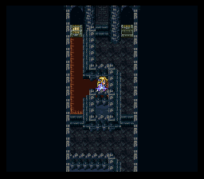
Peepers and EarthGuards have one shield and break to slashing; Peepers also to ice or water, EarthGuards to water. A Black Drgn has four shields and breaks to slashing, fire or holy.
Tzen's desert deals EarthGuards, Peepers and Black Drgns as on the island. On Mobliz's plain, Buffalax take bludgeoning; Delta Bugs piercing or bludgeoning; Bloompires slashing or fire; Lizards slashing, piercing or ice.
Phunbaba. Weak to poison; absorbs lightning, so Bolt only heals him. Bludgeoning and special break him; the last meeting also takes slashing.
The South Figaro cellar deals Commanders and Vector Pups as before. In the castle, Humptys and Crullers take bludgeoning (fire, holy); NeckHunters slashing, piercing or special; Drops piercing or bludgeoning.
The four Tentacles. Five shields each, and each absorbs different elements (fire; ice and water; lightning and water; earth and water), so use weapons: each breaks to two of slashing, piercing and bludgeoning.
Zozo's town pool is as in the World of Balance (poison breaks it). On Mt. Zozo, slashing breaks all five bodies: Punisher, Scrapper, Borras (four shields), Luridan, Ursus. Cyan's Stunner hits the whole pack.
Storm Drgn (optional). Fourteen shields; slashing, piercing and lightning break it. It absorbs wind, so skip Air Blade and Quadra Slice.
Kohlingen has no fights. In the tomb, Orogs, Power Demons and Osteosaurs break to fire, holy or special; Exorays to slashing or piercing; Mad Oscars to slashing or fire.
Dullahan. Ten shields; piercing, bludgeoning, special and fire break it, and it absorbs ice. Setzer's cards and dice count as special.
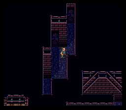
Vindr have one shield and dodge blades; use fire. Wild Cats (one shield, in fours) take slashing, piercing or fire. SoulDancers take slashing, special or poison; Crushers take fire, piercing or bludgeoning, not blades.
Chadarnook. One half of the fight shows no shield line; do not attack it. The other half has six shields and breaks to slashing, piercing, fire or holy; it absorbs lightning.
Still Life. Four shields; slashing, special and fire break it. The Dahling paintings cast Ice 2 and Bolt 2, which Celes's Runic can absorb.
Rain Men take bludgeoning or special; Pan Doras bludgeoning, special, fire or holy; Samurai slashing or piercing; Barb-e slashing or special; Suriander slashing, bludgeoning or holy; Parasites slashing or fire. Holy breaks Rain Men, Pan Doras and Suriander.
Curley, Larry and Moe. Four shields each. Curley: slashing, special, ice, water; absorbs fire. Larry: piercing, bludgeoning, fire; absorbs ice. Moe: slashing, bludgeoning; absorbs lightning.
Wrexsoul. Six shields; slashing, special and ice break it. It absorbs fire and holy. Its SoulSavers (two shields) take special or ice.
Every body here breaks to bludgeoning, so Strago's rod always works. Opinicus, Displayer and Hipocampus also take fire or holy; Eland lightning; Cluck ice; Slatter holy; Warlock lightning or poison.
Hidon. Six shields; piercing, bludgeoning, fire, holy and earth break it, and it absorbs poison. Among its Hidonites, one drinks every element (use weapons) and one is weak to all of them.
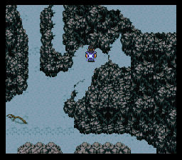
In the mines and on the cliffs, Wizards break to slashing, piercing, special, lightning or poison; Psychots to piercing, special or ice; Red Wolves to slashing or piercing. In Umaro's cave, Ceritops take piercing or bludgeoning, Anemones slashing, Kiwoks slashing, piercing or ice.
Umaro. Six shields; slashing or piercing breaks him; fire and poison hit his weakness and ice heals him.
Tritoch. Ten shields; slashing and piercing chip it despite its defense, and fire burns it. Ice heals it.
Ice Dragon (optional). Six shields; piercing, bludgeoning and fire break it, and ice heals it. Mog's spear is the piercing key.
Only magic works inside. Fire and holy break L.10 and L.50 Magic; poison breaks L.30 and L.80; lightning L.40; fire L.60. L.20 and L.70 Magic carry Reflect, but Quake still reaches them, and both break to earth. L.90 Magic has no shields and takes full damage. The Magic Urn heals you and leaves.
MagiMaster. Eight shields. His one weakness changes as his wall changes; read it, or use the Break spell, which needs no weakness.
White Drgn (optional). Six shields and no weakness at all: the Break spell is the only key.
A Colosseum fight runs itself: your fighter acts alone and takes no orders, and a win pays no Exp. Choose the fighter and the gear well. If Shadow is waiting there, wager the Striker.
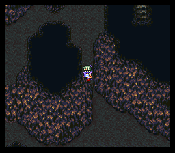
Most of the cave is weak to ice and absorbs fire. Without ice, use holy on Trixters, Phase and Necromancrs, piercing on Aquilas and Parasouls, bludgeoning on Uroburos and Chaos Drgns.
Red Dragon (optional). Six shields; piercing, ice and water break it, and it absorbs fire. Mog's spear is the piercing key.
A katana (slashing) breaks every body: Goblin, Figaliz, Enuo, Boxed Set and Lethal Wpn. Holy hits Goblins, Enuo and Boxed Sets.
Blue Drgn (optional). Six shields; slashing, piercing and lightning break it, and it absorbs water.
Machines (Dueller, Fortis, Junk, IronHitman, Innoc, Scullion, Prometheus, Sky Base) break to piercing or bludgeoning and to lightning or water. Ghosts and casters (Dark Force, Didalos, Madam, Hemophyte, Vectagoyle) break to special; most also to holy.
Doom, Goddess and Poltrgeist (statues). Ten, eight and eight shields. Doom: slashing, special, holy; absorbs ice and poison. Goddess: piercing, special; absorbs lightning and holy. Poltrgeist: bludgeoning, special, poison; absorbs fire and wind.
Guardian. Ten shields; piercing, bludgeoning, lightning and water break it.
Inferno, Striker and Rough. Inferno: six shields; lightning, piercing, bludgeoning; absorbs fire. Striker: fire, slashing, piercing; absorbs ice. Rough: ice, slashing, bludgeoning; absorbs lightning.
Atma. Ten shields; slashing or piercing breaks it. It absorbs poison, wind, holy, earth and water.
Gold Drgn and Skull Drgn. Six shields each. Gold: slashing, piercing, water; absorbs lightning. Skull: bludgeoning, special, fire, holy; absorbs poison.
| Monster | Where | Breaks to |
|---|---|---|
Find the weakness. Break the shield. Boost, and strike.
The monsters would like their shields back. Please do not return them.
OT6 is a fan-made patch for Final Fantasy III (USA) 1.0. You need your own copy of the game.
VERSION {{version}}